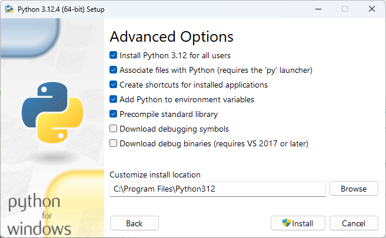
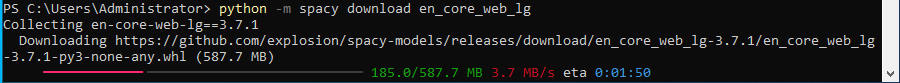
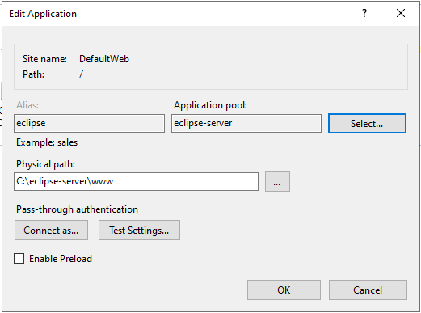

Hosting Eclipse w/ IIS on Windows Server 2022+
Requirements
The following user guide was built using Windows Server 2022 Standard Edition running via Hyper-V on a Windows 11 desktop computer on Milyli's private network.
Nearly all steps followed in this guide can be followed regardless of the host machine. A physical machine running Windows Server, virtual windows server infrastructure, or a Windows virtual machine hosted on a cloud service such as Azure or AWS are all viable options.
Native cloud service hosting is supported but not covered via this document.
You will be required to create a non-admin service account for creating the application pool. This service account will need to be able to access the python command. It is recommended that a new, separate service account is used for this purpose to limit access of the web server to only Eclipse files.
Python will be installed on the server as a part of this guide.
Supported Windows Versions
- Windows Server 2022+ Standard Edition
- IIS 10.0+
Server Setup and Pre-Requisites
Server Packages
Download and install the following packages.
- Install the .NET Core Hosting Bundle
- Install Visual C++ Redistribute Package
- (Recommended) PowerShell 7
Installing Python
At the heart of the Eclipse Server is a .NET application that makes use of Python. There are two considerations that should be made when installing Python.
- Python needs to be accessible by the identity account of the Eclipse application pool.
- Python will also need to be used during setup to install the Presidio Analyzer and load the default spaCy model.
Eclipse requires Python 3.10.x or higher. This guide was written using Python 3.12.4.
Python can be downloaded from the python.org website.
During the installation it is recommended to install python for all users. If this is not possible, python will need to be installed for both your administrator account and the service account created for the Eclipse application pool identity.
To install for all users, use the following prompts during the installation process.
- Select use admin privileges when installing py.exe
- add python.exe to PATH

- Select Customize installation
- Ensure that for all users is selected for the py launcher
- Select Next

- On the next screen, select Install Python 3.12 for all users
Without selecting this option, python will be installed for only the currently logged in user. If you elect to skip this step, you must install python for the service account that the Eclipse application pool identity will run as!

Installing Analyzers and Default spaCy Model
Python will be used to install the presidio analyzers and install Eclipse's default language model.
Launch PowerShell 7 as an administrator and use the following command to install the presidio analyzers.
pip install presidio_analyzer

After the install is successful, install the default language model with the following command.
python -m spacy download en_core_web_lg


Extract the Website
Milyli will share a zip file with you that contains the Eclipse server directory. This zip should be extracted to a root folder. In this example, we extract everything to C:\eclipse-server.
Ensure that all zip contents are in this root folder.
The eclipse server directory structure consists of the following:
- The
wwwdirectory contains the files for the website and API. - The
datadirectory is used for storing app data, requests, responses, and databases. - The
pi-extractordirectory contains the python application.
Create a Developer Certificate
The Eclipse container requires an HTTPS certificate start and run. For Alpha and Beta purposes, a self-signed developer certificate can be used. If possible, a proper certificate from a valid certificate authority should be used.
A developer certificate can easily be created using Windows PowerShell and the following commands.
- Define a certificate variable using the
New-SelfSignedCertificatecommand. - Create (and retain) a password for the cert.
- If using this certificate with other Eclipse setups, export the PFX for the newly created Self Signed Certificate.
$NewCert = New-SelfSignedCertificate -Type SSLServerAuthentication -DnsName localhost -CertStoreLocation Cert:\CurrentUser\My
$Pwd = ConvertTo-SecureString -String "eclipse" -Force -AsPlainText
Export-PfxCertificate -Cert $NewCert -FilePath "C:\eclipse\eclipse.pfx" -Password $Pwd

Create a System Account
In this guide, we use a local account to serve as the service account. A service account should be created and use based on your companies IT policies. The account does not need to be a local admin on the server or have any domain permission.
This account will only be used to grant limited permissions to the eclipse directory and act as the identity of the website application pool.
IIS Setup
In the following steps, we'll create the IIS website from scratch. At any point, feel free to utilize any standard operating procedures your organization utilizes for hosting websites on your network in IIS.
Create the Application Pool
In the following steps we will create the application pool that will be used by the website.
- Launch IIS Manager as an administrator.
- Create a new application pool.
- Give the application name, we chose
eclipse-server. - Choose
No Managed Codefor the .NET CLR Version option. -
Leave Managed pipeline mode set to
integrated. -
Once created, click Advanced settings in the menu on the right.
- Set Enabled 32-Bit Application to
true. - Change Start Mode to
Always Running. -
Change Idle Time-out (minutes) to
0.
-
Change the ApplicationPoolIdentity to the service account created during setup.
Create the Website
In these steps, we will create and configure the base website for the server. This assumes that built-in default website is removed beforehand. If a website already exists with a valid certificate, then this website should be able to be used instead of following these instructions.
New Default Website
- Create a new website in IIS and provide it a name such as
EclipseWeborDefault Website. - Choose the
DefaultAppPool. - Set the the Physical path to the default IIS path at
C:\inetpub\wwwroot\. - (Optional) Configure the host name if you are running multiple websites from this server.
- Add an https binding and select the previously created or installed SSL Certificate.
- Leave all other checkboxes unchecked.
-
Create the website.
-
Select Advanced settings and set Preload Enabled to
True.
Existing Default Website
If you have a pre-existing default website, then the only change that is recommended is to ensure that Preload Enabled is set to True in the advanced settings of the website.
Create the Virtual App
The actual Eclipse server will be setup as an application under the default website. To setup the application follow these steps using an existing website or the one created in the previous section.
- Right click on the website and select
Add application. - Input
eclipseas the alias. - Choose the
eclipse-serverapplication pool created in this guide. - Set the Physical path to the
C:\eclipse-server\wwwdirectory or wherever the root folder is for the unzipped Eclipse server files.

Configure Directory Permissions
The identity of the application pool needs permission to read, write, and execute python scripts from the Eclipse server. To set these permissions follow these steps.
- On the root directory
eclipse-server, right click and select properties. - On the
Securitytab, clickEdit. -
Click Add then search for and add the service account (ours is
eclipse-serverin this guide). -
Select the service account.
-
Add the permissions
Read & Execute,List folder contents, andReadand click Ok.
-
Open the directory, right click on the
datadirectory, and select properties. - On the
Securitytab, ensure that the service account has access to the folder. - Ensure that the account has
ModifyandWritepermissions on the directory.
Restart IIS
Either from IIS Manager or command prompt, restart the web server. If using the IIS Manager, you can do so from the root node.

Otherwise, open PowerShell 7 as an administrator and input the command iisreset.
Wrap-up and Troubleshooting
Depending on how the website the virtual application was created under is configured, the Eclipse server should now be running!
In this guide, by leaving everything at default, the server is available under localhost and can be accessed by navigating to https://localhost/eclipse/swagger. The URL will be different based on the configuration of your website.

Checking logs
Logs for the website can be accessed from two locations. Normal, IIS application logs will automatically appear in the servers Event Viewer. You can review these logs by hitting the windows key typing in event and selecting the Event Viewer app.
In the Event Viewer, navigate to Windows Logs -> Application and look for application errors.
Specific logs can also be accessed directly from the eclipse logs stored in the C:\eclipse-server\data\logs directory.
HTTP Error 500.32 - Failed to load .NET Core host
This error indicates that the server does not have the pre-requisites for IIS to run a .NET Core application. Ensure that the C++ redistribute package was installed earlier in this guide.
Failed to start process python
This error will present itself both in the host servers Event Viewer and the Eclipse servers logs.
The full error will resemble the following string:
Description: The process was terminated due to an unhandled exception.
Exception Info: Milyli.Eclipse.Server.Analyzer.Exceptions.ExternalProcessException: Failed to start process python
---> System.ComponentModel.Win32Exception (2): An error occurred trying to start process python with working directory C:\eclipse-server\www. The system cannot find the file specified.
This error indicates that the user the application pool is running under does not have access to python. Either install python for all users or log into the service account and ensure that python is installed for that user.
Installing for the individual account was not tested for the writing of this guide.